사회조사분석사-2급 (2007-08-05 기출문제)
1과목: 조사방법론 I
1. 다음은 어떤 변수에 대한 설명인가?
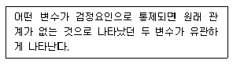
- 예측변수
- 왜곡변수
- 억제변수
- 종속변수
(정답률: 알수없음)

2. 연구자가 연구대상에 직접 접근하여 그들의 일상적 삶의 실제를 그들의 입장과 관점에서 이해하려고 하는 연구방법은?
- 실증적 연구방법
- 해석적 연구방법
- 실험 연구방법
- 조사 연구방법
(정답률: 알수없음)
3. 우편조사의 응답률에 영향을 미치는 주요 요인이 아닌 것은? (문제 오류로 실제 시험에서는 모두 정답처리 되었습니다. 여기서는 1번을 누르면 정답 처리 됩니다.)
- 연구주관기관과 지원단체의 성격
- 응답에 대한 동기부여
- 질문지의 양식이나 우송방법
- 응답자의 지역적 범위
(정답률: 50%)
4. 개방형 질문의 장・단점이 아닌 것은?
- 개방형 질문은 자료처리에 많은 시간과 노력이 든다
- 개인 사생활과 관련되거나 민감한 질문일수록 개방형 질문이 적합하다
- 개방형 질문은 연구자가 알지 못했던 정보나 문제점을 발견하는데 유용하다
- 개방형 질문은 응답자에게 자기표현의 기회를 줌으로써 응답자의 의견을 존중하는 느낌을 준다
(정답률: 74%)
5. 다음 중 결측자료(missing data)의 처리방법으로 가장 적합한 것은?
- 유사사례를 추출하여 그 사례에 기재된 내용을 대체하여 사용한다
- 결측된 변수의 평균값을 대체하여 사용한다
- 난수표에서 번호를 추출하여 그 점수를 대체하여 사용한다
- 결측자료가 50% 이상이 되더라도 원래 수집된 사례수는 유지해야 하기 때문에 그대로 사용한다
(정답률: 28%)
6. 과학적 연구의 분석단위에 관한 설명으로 틀린것은?
- 어떤 분석단위(집단 등)를 채택하여 연구한 결과 얻은 결론을 다른 수준의 분석단위(개인 등)에 적용시키는 오류를 환원주의적 오류라고 한다
- ‘여성은 집밖에서 일하는 시간이 적기 때문에 남성보다 TV 시청 시간이 많다.’는 사례에서의 분석단위는 개인이다
- 분석단위에는 개인, 집단, 프로그램, 조직, 제도, 사회적 생성물 등으로 분류할 수 있다
- 분석단위는 연구자가 그 속성 또는 특징에 관한 자료를 수집하고 기술, 설명하고자 하는 사람이나 사물을 의미한다
(정답률: 알수없음)
7. 다음 중 투표와 관련된 정치여론조사를 신속하게 해야 될 경우 가장 적합한 자료수집방법은?
- 면접조사
- 전화조사
- 우편조사
- 집단조사
(정답률: 80%)
8. 다음 중 가설이 갖추어야 할 요건이 아닌 것은? (문제 오류로 실제 시험에서는 모두 정답처리 되었습니다. 여기서는 가번을 누르면 정답 처리 됩니다.)
- 가설은 경험적으로 검증할 수 있어야 한다
- 가설은 계량적인 형태를 취하든가 계량화할 수 있어야 한다
- 가설의 표현은 간단명료해야 한다
- 가설은 동일 분야의 다른 가설과 연관을 가져서는 안된다.
(정답률: 13%)
9. 다음 중 동일한 표본을 대사으로 동일한 내용의 설문을 일정한 시간 간격을 두고 계속해서 조사하는 설계는?
- 요인설계
- 교차분석 설계
- 계속적 표본설계
- 패널 조사설계
(정답률: 알수없음)
10. 다음중 집단조사(group survey)의 특징이 아닌 것은?
- 집단상황이 응답을 왜곡시킬 가능성을 가진다
- 비용과 시간을 절약하고 동일성을 확보할 수 있다
- 응답결과에 대한 응답자의 신뢰도가 높다
- 면접자의 차이에 의해 응답이 틀릴 가능성이 높다
(정답률: 55%)
11. 다음중 솔로몬 4집단 설계(Solomon four group design)에 대한 설명으로 틀린것은?
- 집단간 격리에 어려움이 있어 실제상황에서는 적용이 많이 안된다
- 통제집단 전후비교와 통제집단 후비교를 조합한 것이다
- 3개의 실험집단과 1개의 통제집단을 둔다
- 각종 외생변수의 영향을 완벽히 분리할 수 있다
(정답률: 알수없음)
12. ‘침묵의 나선’(spiral of silence)이론이 주장하는 바는 무엇인가? (문제 오류로 실제 시험에서는 모두 정답처리 되었습니다. 여기서는 가번을 누르면 정답 처리 됩니다.)
- 다수의 의견이 개인이 밖으로 표현하는 의견에 영향을 미치게 된다
- 자신의 위신을 높이기 위해 사실과 다른 응답을 한다
- 평소에는 생각해 보지 않았던 질문을 가지고 있었던 것처럼 대답한다
- 면접자의 눈치를 보며 자신의 생각과 관계없이 응답한다
(정답률: 36%)
13. 질문지를 작성한 후 시행되는 사전조사 (pre-test)에 대한 설명으로 틀린것은? (문제 오류로 실제 시험에서는 모두 정답처리 되었습니다. 여기서는 가번을 누르면 정답 처리 됩니다.)
- 본조사를 위해 표집된 표본 중 일정한 수의 응답자를 조사대상으로 해야한다
- 본조사와 면접방식이나 진행절차를 동일시한다
- 응답자들이 잘못이해하는 질문이 있는가에 유의한다
- 응답범주에 제시되지 않은 응답을 기록해 둔다
(정답률: 48%)
14. 정신요법에서 유래된 것으로 면접자(의사)가 아무런 암시없이 피면접자(환자)로 하여금 자유로이 자기 감정을 표현하도록 하는 자료수집 방법은?
- 집단면접(group interview)
- 집중면접(focused interview)
- 심층면접(in-depth interview)
- 비지시적면접(nondirective interview)
(정답률: 54%)
15. 면접조사에서 면접과정의 관리에 대한 설명으로 맞는 것은? (문제 오류로 실제 시험에서는 모두 정답처리 되었습니다. 여기서는 가번을 누르면 정답 처리 됩니다.)
- 면접지침을 작성하여 응답자들에게 배포한다
- 면접원에 대한 사전교육은 면접원에 의한 편향(bias)을 크게 할 수 있다
- 면접기간 동안에도 면접원에 대한 철저한 통제가 이루어져야 한다
- 면접원 교육과정에서 예외적인 상황은 언급하지 않도록 주의한다
(정답률: 54%)
16. 다음중 조사대상의 두 변수들간에 인과 관계가 성립되기 위한 조건이 아닌 것은?
- 원인의 변수가 결과의 변수에 선행하여야 한다.
- 두 변수간의 상호관계는 제3의 변수에 의해 설명되면 안된다.
- 때로는 원인변수를 제거해도 결과변수가 존재할 수 있다.
- 두 변수는 상호연관성을 가져야 한다.
(정답률: 40%)
17. 다음 중 귀납적 추론의 설명으로 맞는 것은?
- 경험적 증거에 의존하지 않는다
- 일반적인 원리로부터 특정한 결론을 도출한다
- 가능한 한 과학적 연구에서는 사용해서는 안된다
- 확률론적 결론에 기반을 두기도 한다
(정답률: 42%)
18. 질문지 작성 시 어휘선택에 관한 원칙이 아닌 것은?
- 간단명료해야 한다
- 두 가지 내용을 동시에 하나의 질문으로 묶어서 만들어도 좋다
- 모호하고 중복의 뜻을 갖는 표현은 피한다
- 보통 사람이 이해할 수 있는 문장과 어휘를 사용한다
(정답률: 79%)
19. 사례연구에 대한 설명으로 틀린것은? (문제 오류로 실제 시험에서는 모두 정답처리 되었습니다. 여기서는 가번을 누르면 정답 처리 됩니다.)
- 사례연구는 질적 조사방법으로 양적인 방법을 사용하여 수집한 증거는 이용하지 않는다
- 사례연구에서는 기존 문서나 관찰 등과 같은 방법으로 자료를 수집한다.
- 사례는 개인, 프로그램, 의사결정, 조직, 사건 등이 될 수 있다
- 사례연구는 한 특정한 사례에 대해 집중적으로 연구 하는 것이다
(정답률: 72%)
20. 대학원에서 석사학위 논문을 준비하는 연구자가 설문지를 가지고 우편조사를 할 때, 회수율을 높이기 위하여 고안한 방법 중 그 효과가 가장 불확실한 것은? (문제 오류로 실제 시험에서는 모두 정답처리 되었습니다. 여기서는 가번을 누르면 정답 처리 됩니다.)
- 전화와 우편엽서로 2회 후속 독촉한다
- 신상이나 소득 같은 정보를 가능한 생략한다
- 수신자의 주소와 우표가 붙은 반송 봉투를 동봉한다
- 연구자가 대학원생임을 솔직히 밝힌다
(정답률: 28%)
21. 다음은 온라인조사 중 무엇에 대한 설명 인가?
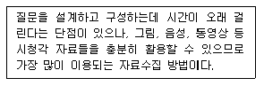
- 전자우편조사(e-mail survey)
- 웹조사(HTML form survey)
- 다운로드조사(downloadable survey)
- 컴퓨터 자계식 자료 수집(CSADC )
(정답률: 65%)
22. 다음 국민의식 조사의 질문은 어떤 점에서 문제가 있는가?
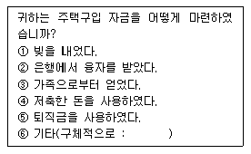
- 간결성
- 명확성
- 상호배타성
- 포괄성
(정답률: 알수없음)
23. J.S. Mill의 실험설계 기본 논리 중 관찰하는 모든 현상에서 항상 한 가지 요소 또는 조건이 발견된다면 그 현상과 요소는 인과적으로 연결되었다는 것은?
- 차이법
- 잔여법
- 일치법
- 공동변화법
(정답률: 31%)
24. 복잡한 현상에 대한 응답유형을 알아보기 위해 탐색적 예비조사(pilot study)에서 유용한 질문형식은?
- 개방형질문
- 폐쇄형 질문
- 부호화질문
- 범주형 질문
(정답률: 54%)
25. 조사 후 검증과정에서 특정 면접원의 면접 결과에 일부 의심스러운 점이 발견되었다. 이 면접원의 조사결과에 대해 일반적으로 사용하는 가장 적절한 대응조치는? (문제 오류로 실제 시험에서는 모두 정답처리 되었습니다. 여기서는 가번을 누르면 정답 처리 됩니다.)
- 면접결과 중 의심스러운 것만 제외하고 포함해서 분석
- 해당 면접원의 모든 면접결과 무효과 처리
- 다른 면접결과에도 영향을 줄 수 있으므로 면접을 처음부터 다시 수행
- 일부이기 때문에 조사에 큰 영향을 주지 않아 모두 포함해 분석
(정답률: 60%)
26. 다음중 과학적 연구절차에 기초한 올바른 이론 구축 과정은?
- 연구문제-개념화-가설설정-자료수집-자료분석
- 개념화-연구문제-가설설정-자료수집-자료분석
- 연구문제-가설설정-개념화-자료수집-자료분석
- 개넘화-가설설정-연구문제-자료수집-자료분석
(정답률: 알수없음)
27. 구조화 면접의 특징으로 옳지 않은 것은?
- 면접자의 자유재량의 여지가 없다
- 면접상황에 구애됨이 없이 모든 응답자에게 동일한 방법으로 수행한다
- 비구조화 면접에 비해서 자료의 신뢰도는 떨어진다
- 비구조화면접에 비해 일관성이 유지된다
(정답률: 46%)
28. 폐쇄형 질문에 대한 응답 카테고리의 형태에서 응답자가 생각하는 중요도의 정도에 따라 순서대로 답을 선택하는 방식은?
- 선다형
- 나열형
- 서열형
- 평정형
(정답률: 55%)
29. 프로빙(probing) 설명으로 틀린것은?
- 답변의 정확도를 판단하는 방법으로 활용되기도 한다
- 정확한 답을 얻기 위해 방향을 지시하는 기법이다
- 평정식 질문에 대한 답을 비교하는 절차로서 활용된다
- 일종의 폐쇄식 질문에 답을 하고 이에 관련된 의문을 탐색하는 보조방법이다
(정답률: 8%)
30. 내적타당도 저해요인이 아닌 것은? (문제 오류로 실제 시험에서는 모두 정답처리 되었습니다. 여기서는 가번을 누르면 정답 처리 됩니다.)
- 외부사건
- 시간에 따른 성숙효과
- 플라시보 효과
- 통계적 회귀
(정답률: 20%)
2과목: 조사방법론 II
31. 자료에 대한 통계분석 방법 결정시 가장 중요하게 고려해야 할 측정의 요소는?
- 신뢰도
- 타당도
- 측정방법
- 측정수준
(정답률: 28%)
32. 2년제 전문대학의 대학생 집단을 학년과 성별, 계열별(인문계, 자연계, 예체능계)로 구분하여 할당표본추출을 할 경우 할당표는 총 몇 개의 범주로 구분되는가?
- 3개
- 5개
- 12개
- 24개
(정답률: 85%)
33. 사회조사에서 비확률표본추출이 많이 사용되는 이유는? (문제 오류로 실제 시험에서는 모두 정답처리 되었습니다. 여기서는 가번을 누르면 정답 처리 됩니다.)
- 표본추출오차가 적게 나타난다
- 모집단에 대한 추정이 용이하다
- 표본설계가 용이하고 시간과 비용을 절약할 수 있다
- 모집단 본래의 특성과 일정량 이상은 차이가 나지 않는 결과를 얻을 수 있다
(정답률: 20%)
34. 사회조사에서 신뢰도가 높은 자료를 얻기 위한 방안으로 틀린것은? (문제 오류로 실제 시험에서는 모두 정답처리 되었습니다. 여기서는 가번을 누르면 정답 처리 됩니다.)
- 면접자들의 면접방식과 태도에 일관성을 유지한다
- 동일한 개념이나 속성을 측정하기 위한 항목이 없어야 한다
- 조사대상자가 잘 모르거나 관심이 없는 내용에 대한 측정은 하지 않는 것이 좋다
- 누구나 동일하게 이해하도록 측정도구가 되는 항목을 구성한다
(정답률: 알수없음)
35. 거트만 척도에 대한 설명으로 틀린것은?
- 누적척도(cumulative scale)라고도 한다.
- 단일차원의 서로 이질적인 문항으로 구성되며 여러 개의 변수를 측정한다.
- 재생가능성을 통해 척도의 질을 판단한다.
- 거트만 척도는 일단 자료가 수집된 이후에 구성될 수 있다.
(정답률: 10%)
36. 유의표본추출의 설명으로 틀린 것은?
- 조사자의 자의적 판단에 의해 표본추출 대상지역이 결정된다
- 판단표본추출과 거의 동일한 내용이다
- 조사자의 주관이 충분히 반영될 수 있어 확률표본추출보다는 대표성 있는 조사가 가능해진다
- 특별한 특징을 가진 조사대상자들만을 선정하여 조사할 수 있다
(정답률: 58%)
37. 소시오메트리 척도의 특징이 아닌 것은? (문제 오류로 실제 시험에서는 모두 정답처리 되었습니다. 여기서는 가번을 누르면 정답 처리 됩니다.)
- 집단결속력의 정도를 저울질 하는데 사용된다
- 조사대상인원이 소수일 대 적용이 용이하다
- 통계학에서 다루는 조합의 원리가 적용된다
- 조사대상집단 구성원 모두 동질성을 띄어야 한다
(정답률: 28%)
38. 일상적인 삶에서 야기되는 스트레스를 측정하기 위하여 여러개의 문항들을 바탕으로 하나의 척도를 만들려고 한다. 이 문항들은 모두 등간척도로 구성되었으며, 전문가들로 하여금 각 문항들을 등급지어서 11개 문항을 선택하여 점수의 범위를 나타내게 하였다. 이 절차를 거쳐서 만들어진 척도는?
- 거트만 척도
- 보가더스의 사회적 거리척도
- 서스톤 척도
- 리커트 척도
(정답률: 50%)
39. 이론적 개념을 측정가능한 수준의 변수로 전환시키는 작업과정은?
- 서열화
- 수향화
- 척도화
- 조작화
(정답률: 62%)
40. 모집단이 서로 상이한 특성으로 이루어 져 있을 경우에 모집단을 유사한 특성으로 묶은 여러 부분집단에서 단순무작위추출법에 의하여 표본을 추출하는 방법은?
- 할당표본추출법
- 편의표본추출법
- 층화무작위표본추출법
- 군집표본추출법
(정답률: 알수없음)
41. 야구선수의 등번호를 표현하는 측정의 수준은?
- 비율수준의 측정
- 등간수준의 측정
- 서열수준의 측정
- 명목수준의 측정
(정답률: 64%)
42. 비율척도에 대한 설명으로 틀린것은?
- 등간척도의 성격에 절대 0의 값을 추가한 척도다
- 사칙연산이 가능하다
- 등간척도처럼 기하평균과 변동계수 등을 비롯한 모든 고등 통계량을 구할 수 있다
- 빈도수와 중위수를 구할 수 있다
(정답률: 30%)
43. 집락표본추출은 어떤 경우에 추정 효율이 높은가? (문제 오류로 실제 시험에서는 모두 정답처리 되었습니다. 여기서는 가번을 누르면 정답 처리 됩니다.)
- 각 집락이 모집단의 축소판일 경우
- 각 집락마다 집락들의 특성이 서로 다른 경우
- 각 집락 내 관측값들이 비슷할 경우
- 집락 평균들이 서로 다른 경우
(정답률: 47%)
44. 다음 중 표집오차에 관한 설명으로 틀린 것은?
- 전체 표본의 크기가 같다고 했을 때, 단순무작 위표본추출법에서보다 층화표본추출법에서 표집오차가 작게 나타난다
- 전체표본의 크기가 같다고 했을 대, 단순무작위표본추출법에서보다 집락표본추춥법에서 표집오차가 크게 나타난다
- 단순무작위표본추출법에서 표집오차는 표본의 크기가 클수록 커진다
- 단순무작위표본추출법에서 표집오차는 분산의 크기가 클수록 커진다
(정답률: 60%)
45. 측정에서 확률오차(혹은 비체계적 오차)와 체계오차를 신뢰도와 타당도의 개념과 연결시켜 생각할 때, 타당도 높으나 신뢰도가 낮은 경우는 어디에 해당하는가?(오류 신고가 접수된 문제입니다. 반드시 정답과 해설을 확인하시기 바랍니다.)
- 확률오차가 작고 체계오차가 작을 경우
- 확률오차가 크고 체계오차가 작을 경우
- 확률오차가 작고 체계오차가 클 경우
- 확률오차가 크고 체계오차가 클 경우
(정답률: 22%)
46. 다음은 어느 척도법에 관한 설명인가?
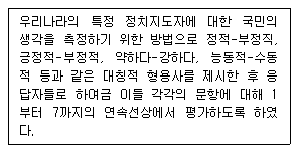
- 서스톤 척도
- 거트만 척도
- 리커트 척도
- 의미분화척도
(정답률: 13%)
47. 다음중 명목척도로 이루어진 변수들간의 관계를 살펴볼 수 있는 통계치는?
- 카이제곱(chi-square)
- 감마(Gamma)
- 소머의 d(Somers' d)
- 피어슨의 상관계수 r
(정답률: 40%)
48. 일본에서 동경대학교 학생들의 지능검사를 하는데 중국어로 된 검사지를 사용하였을 경우 제기될 수 있는 측정상의 가장 큰 문제점은?
- 신뢰성 훼손
- 일관성 훼손
- 대표성 훼손
- 타당성 훼손
(정답률: 30%)
49. 평균상관계수가 0.2, 문항수가 7개일 때, 크론바하의 알파값은? (문제 오류로 실제 시험에서는 모두 정답처리 되었습니다. 여기서는 가번을 누르면 정답 처리 됩니다.)
- 0.63
- 0.72
- 0.84
- 0.92
(정답률: 38%)
50. 눈덩이 표본추출에 대한 설명으로 틀린 것은?
- 사회적 연결망을 이용한 추출방법이다
- 모집단의 구성비율을 이용해서 표본추출하는 방법이다
- 희귀한 사건이다 현상에 대해 조사할 때 주로 사용한다
- 확률적 표본추출방법이 아니므로 통계적 추론을 할 수 없다
(정답률: 47%)
51. 내용타당도(content validity)의 의미로 옳은것은? (문제 오류로 실제 시험에서는 모두 정답처리 되었습니다. 여기서는 가번을 누르면 정답 처리 됩니다.)
- 측정목적에 기초하여 측정항목들의 적합성을 결정
- 측정하고자 하는 현상을 일관되게 측정하는 능력
- 두명 이상의 관찰자들이 관찰 후 얼마나 일관성이 있는지를 확인
- 같은 측정도구를 사용하여 측정을 두 번 하여 그 상관관계 확인
(정답률: 알수없음)
52. 명목척도로 나타내기위해 대상을 분류할 경우 지켜야 할 원칙으로 틀린것은? (문제 오류로 실제 시험에서는 모두 정답처리 되었습니다. 여기서는 가번을 누르면 정답 처리 됩니다.)
- 범주간 간격은 동일해야 한다
- 분류범주는 상호배제적이어야 한다
- 분류범주는 모든대상을 총망라해야한다
- 분류체계의 일관성을 가져야 한다
(정답률: 63%)
53. 스피어만-브라운(Spearman-Brown) 공식은 주로 어떤 경우에 사용되는가?
- 동형검사 신뢰도 추정
- 반분신뢰도로 전체신뢰도 추정
- 범위의 축소로 인한 예언타당도에 대한 교정
- Kuder-Richardson 신뢰도 추정
(정답률: 32%)
54. 척도제작시 요인분석(factor analysis)이 활용되는 경우로 옳지 않은 것은?
- 문항들 간의 관련성 분석
- 척도의 구성요인 확인
- 척도의 신뢰도 계수 산출
- 척도의 단일 차원성에 대한 검증
(정답률: 알수없음)
55. 다음 그림에 대한 설명으로 맞는 것은
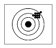
- 신뢰성은 높으나 타당성이 낮은 경우
- 신뢰성과 타당성이 모두 낮은 경우
- 신뢰성과 타당성이 모두 높은 경우
- 신뢰성은 낮으나 타당성이 높은 경우
(정답률: 알수없음)
56. 다음의 사항을 측정할 대 측정 수준이 다른 것은?
- 교통사고 횟수
- 몸무게
- 온도
- GNP
(정답률: 18%)
57. 표본추출 설계의 일반적인 단계로 가장 올바른 것은? (문제 오류로 실제 시험에서는 모두 정답처리 되었습니다. 여기서는 가번을 누르면 정답 처리 됩니다.)
- 표본크기 결정-모집단 확정-표본틀 결정-표본추출
- 모집단 확정-표본크기 결정-표본틀 결정-표본추출방법 결정-표본추출
- 모집단 확정-표본틀 결정-표본추출방법 결정-표본크기 결정-표본추출
- 표본틀 결정-모집단 확정-표본크기 결정-표본추출방법 결정-표본추출
(정답률: 23%)
58. 거트만 척도에서 총 응답자가 600명이고 조사항목이 20문항이었다. 400이면 재상계수가 얼마인가?
- 0.80
- 0.87
- 0.77
- 0.97
(정답률: 알수없음)
59. 실험설계에서 내적타당성의 문제점 중 극단적인 사례들을 뽑아서 다음 시점과 비교할 때 일어날 수 있는 해석상의 오류는? (문제 오류로 실제 시험에서는 모두 정답처리 되었습니다. 여기서는 가번을 누르면 정답 처리 됩니다.)
- 역사의 요인
- 성숙의 요인
- 검사의 영향
- 통계적 회귀
(정답률: 10%)
60. 조작화의 결과로서 신앙심을 측정하기 위해서 사용된 일주일간 성경책을 읽는 횟 수는 다음 중 무엇을 나타내는 예인가?
- 개념적 정의
- 지표
- 개념
- 지수
(정답률: 9%)
3과목: 사회통계
61. 다음의 6개의 측정값에 대한 산술평균과 중위수는?
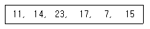
- 14.5, 14.5
- 14.5, 14
- 14.5, 15
- 15, 14
(정답률: 42%)
62. 상자에 파란공이 5개, 빨간공이 4개, 노란 공이 3개 들어있다. 이 중 임의로 1개의 공을 꺼낼 때 그것이 빨간공일 확률은?
- 1/3
- 1/4
- 1/5
- 1/6
(정답률: 알수없음)
63. 다음 중 산포도의 측도가 아닌 것은?
- 사분위 편차
- 왜도
- 범위
- 분산
(정답률: 40%)
64. 두 확률변수 X, Y에 대하여 다음 중 옳지 않은 것은?(오류 신고가 접수된 문제입니다. 반드시 정답과 해설을 확인하시기 바랍니다.)
- E(X+Y) = E(X) + E(Y)
- V(X-Y) = V(X) + V(Y) -2cov(X,Y)
- E(XY) = E(X) ㆍ E(Y)
- E(aX+b) = aE(X) +b
(정답률: 20%)
65. 비교실험에 대한 객관적 해석을 가능하게 하는 세가지 원리가 아닌 것은?
- 임의화
- 반복
- 블록화
- 평균화
(정답률: 알수없음)
66. 대표본에서 변동계수(coefficient of variation) c를 이용하여 모평균 μ에 대한 95% 신뢰구간을 표시하고자 한다. 표본평균을
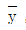
, 표본의 크기를 n이라 할 때 올 바른 공식은?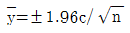
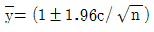
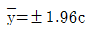
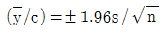
(정답률: 0%)
67. 회귀모형을 적합한 결과
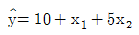
를 얻었다. 두 변수 x1과 x2의 상대적 중요도에 대한 설명 중 맞는 것은? (문제 오류로 실제 시험에서는 모두 정답처리 되었습니다. 여기서는 가번을 누르면 정답 처리 됩니다.)- y를 설명하는데 있어 x2는 x1보다 5배 더 중요하다
- y를 설명하는데 있어 x1은 x2보다 5배 더 중요하다
- 둘다 똑같이 중요하다
- x1과 x2는 단위가 다를수 있고 정의된 범위가 다를 수 있기 때문에 상대적 중요도를 함부로 말할 수 없다
(정답률: 34%)
68. 신뢰수준(confidence level)에 대한 설명으로 틀린 것은?
- 신뢰구간에 확신하는 정도를 의미한다
- 신뢰수준은 연구자가 결정한다
- 신뢰수준이 95%라는 의미는 표본오차가 ±5%라는 의미이다
- 신뢰수준 높이면 신뢰구간은 넓어진다
(정답률: 알수없음)
69. 분산분석에 대한 설명 중 올바르게 짝지어진 것은?
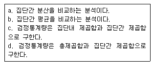
- a, c
- a, d
- b, c
- b, d
(정답률: 20%)
70. 비대칭도(skewness)에 대한 설명으로 틀린 것은?
- 비대칭도 값이 1이면 좌우대칭형 분포를 나타낸다
- 비대칭도의 부호는 관측값 분포의 꼬리방향을 나타낸다
- 비대칭도는 대칭성 혹은 비대칭성을 측정하는 통계수치다
- 비대칭도값이 음수이면 관측값들이 주로 오른쪽에 모여 있어 왼쪽으로 꼬리를 길게 늘어뜨린 모양을 나타낸다
(정답률: 46%)
71. ‘남녀 월급액수에는 차이가 있다’라는 주장을 검증하기 위하여 사회조사를 실시하였다. 조사결과 남자집단의 평균액수는 μ1, 여자집단의 평균액수는 μ2라고 한다면 귀무가설은?
- μ1＞μ2
- μ1=μ2
- μ1＜μ2
- μ1≠μ2
(정답률: 10%)
72. ‘성별 평균소득’에 관한 설문조사자료를 정리한 결과, 집단내 편차제곱의 평균 (MSw)은 50, 집단간 편차제곱의 평균은 (MSb)은 25로 나타났다. 이 경우 F값은?
- 0.5
- 2
- 25
- 75
(정답률: 19%)
73. 회귀분석의 총 편차의 제곱합에서 회귀에 의해 설명되는 부분에 의해 발생하는 편차의 제곱합은? (문제 오류로 실제 시험에서는 모두 정답처리 되었습니다. 여기서는 가번을 누르면 정답 처리 됩니다.)
- 총제곱합
- 회귀제곱합
- 잔차제곱합
- 오차제곱합
(정답률: 알수없음)
74. 표준화 변환을 하면 변환된 자료의 평균과 표준편차의 값은?
- 평균 =0, 표준편차 =1
- 평균 =1, 표준편차 =1
- 평균 =1, 표준편차 =0
- 평균 =0, 표준편차 =0
(정답률: 50%)
75. A회사에서 만든 제품의 수명의 표준편차는 50이라고 한다. 새로운 공정에 의해 시 제품 100개를 생산하여 실험한 결과 수명의 평균이 280이었다. 모 평균에 대한 95% 오차한계는?
- 9.8
- 12.9
- 98
- 129
(정답률: 37%)
76. 미국에서 흑인과 백인의 교육수준별 주관적 계급의식 조사를 통해 얻은 자료에 대한 분석 결과 아래 그림과 같은 관계를 얻을 수 있었다. 다음중 이 그림에 대한 설명으로 잘못된것은? (단, 이 때, 상 중, 하로 표시한 것은 그림의 편의를 위한 것으로 실제 측정과 분석은 연속형 자료를 기초로 이루어졌다)
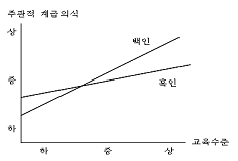
- 흑인과 백인 모두 교육수준이 상승함에 따라 주관적 계급의식 역시 높아진다
- 흑인의 주관적 계급의식은 중간 이상의 교육수준을 받았을 경우 백인보다 낮지만 그 이하일 경우 백인 보다 높다
- 교육수준이 흑인의 주관적 계급의식에 미치는 영향의 정도는 백인에 비해 더 낮다
- 주관적 계급의식에 대한 영향을 미치는 독립변수로서 인종과 교육수준 간에는 통계적 상호작용이 존재하지 않는다
(정답률: 알수없음)
77. 산술평균에 대한 설명으로 틀린 것은?
- 계산에 의하여 얻어지는 값이므로 이상점의 영향을 받지 않는다
- 산술평균으로부터 관찰값 편차의 합은 0이다
- 자료의 분포가 좌우대칭이면 산술평균과 중위수(중앙값)는 같다
- 대표지 중에서 가장 많이 사용된다
(정답률: 60%)
78. 상관계수에 대한 설명으로 틀린것은?
- 상관계수 rxy는 두 변수 X와 Y의 산포의 정도를 나타낸다
- -1 ≤ rxy ≤+1
- rxy =0이면 두 변수는 무상관이다
- rxy =±1이면 두 변수는 완전상관관계에 있다
(정답률: 25%)
79. 지역 서비스체계의 타당성에 대한 여론을 조사하기 위해서 적절한 표본크기를 결정하고자 한다. 95% 신뢰수준에서 모비율에 대한 추정오차의 한계가 4%이내에 있게 하려면 표본크기는 어느정도로 해야 하겠는가? (단 표준화 정규분포에서 P(Z≥1.96)=0.025이다)
- 157명
- 601명
- 1201명
- 2401명
(정답률: 50%)
80. 크기 n인 표본으로 신뢰수준 95%를 갖도록 모평균을 추정하였더니 신뢰구간의 길이가 10이었다. 동일한 조건하에서 표본의 크기만을 1/4로 줄이면 신뢰구간의 길이는?
- 1/4로 줄어든다.
- 1/2로 줄어든다.
- 2배로 늘어난다.
- 4배로 늘어난다.
(정답률: 알수없음)
81. 다음 일원분산분석에서 처리간평방합 (SST)과 오차평방합(SSE)은?
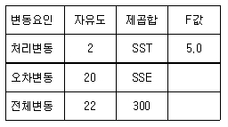
- SST = 80, SSE = 220
- SST = 100, SSE = 200
- SST = 150, SSE = 150
- SST = 200, SSE = 100
(정답률: 58%)
82. 통계적 가설검정을 위한 검정통계값에 대한 유의확률(p-value)이 주어졌을 때, 귀무가설을 유의수준 α로 기각할 수 있는 경우는?
- p-value>α
- p-value<α
- p-value=α
- p-value>2α
(정답률: 55%)
83. 평균이 μ 이고 분산이 σ2=9인 정규모집단에서 크기가 100인 확률표본에서 얻은 표본평균
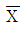
를 이용하여 가설 H0:μ=0, H1:μ≥0을 유의수준 0.⑤로 검정하는 경우 기각역은 Z≥1.645 일 때 검정통계량 Z에 해당하는 것은?- 100
 / 9
/ 9 - 100
 / 3
/ 3 - 10
 / 9
/ 9 - 10
 / 3
/ 3
(정답률: 알수없음)
84. 통계적 가설의 기각여부를 판정하는 가설검정에 대한 설명으로 맞는 것은?
- 표본으로부터 확실한 근거에 의하여 입증하고자 하는 가설을 귀무가설이라 한다
- 유의수준은 제2종 오류를 범할 확률의 최대허용한계이다
- 대립가설을 채택하게 하는 검정통계량의 영역을 채택역이라 한다
- 대립가설이 옳은데도 귀무가설을 채택함으로써 범하게 되는 오류를 제 2 종 오류라 한다
(정답률: 32%)
85. 정규분포의 특성에 대한 설명으로 틀린 것은?
- 평균, 중위수, 최빈수가 모두 일치한다
- X=μ에 관해 종 모향의 좌우대칭이고, 이 점에서 확률밀도함수가 최대값 1/(σ√2π)을 갖는다
- 분포의 기울어진 방향과 정도를 나타내는 왜도 α3=0 이다
- 분포의 봉우리가 얼마나 뾰족한가를 관측하는 첨도 α4=1 이다
(정답률: 46%)
86. 한 사람이 5일 연속 즉석 당첨복권을 구입했다고 하자. 어느날 당첨될 확률이 1/5이고 여러날 각각 당첨되는 것이 서로 독립이라 하면 2장의 당첨복권과 3장의 무효 복권을 샀을 확률은?
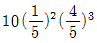
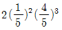
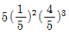
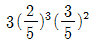
(정답률: 25%)
87. 다음 중 평균의 표준오차(standard error of the mean)에 대한 설명으로 틀린 것은?
- 평균의 표본분포에서 표준편차를 말한다
- 모집단의 표준편차가 클수록 평균의 표준오차는 작아진다
- 표본크기가 클 수록 평균의 표준오차는 작아진다
- 평균의 표준오차는 평균의 표본분포에서 표준정규편차로 이용될 수 있다
(정답률: 알수없음)
88. 단순 회귀에서 적합 직선을
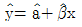
라고 하고, 두 변수 Y 와 X 사이의 피어슨 상관계수를 r이라고 할 때 이에 대한 설명으로 옳은 것은? 과 γ은 항상 같은 부호다
과 γ은 항상 같은 부호다 과 γ은 항상 다른 부호다
과 γ은 항상 다른 부호다 인 경우,
인 경우,  과 γ은 같은 부호다
과 γ은 같은 부호다 인 경우,
인 경우,  과 γ은 다른 부호다
과 γ은 다른 부호다
(정답률: 8%)
89. R2가 0.4일대, 독립변수의 수가 2이고 표본의 수가 40이라면 수정결정계수는? (문제 오류로 실제 시험에서는 모두 정답처리 되었습니다. 여기서는 가번을 누르면 정답 처리 됩니다.)
- 0.392
- 0.384
- 0.376
- 0.368
(정답률: 알수없음)
90. 어느 회사는 4개의 철강공급자로부터 철판을 공급받았는데 각 공급자들이 납품하는 철판의 품질을 평가하기 위해 인장강도(kg/psi)를 각각 2회 측정했다. 여기서 얻은 다음 중간결과를 이용해서 4개의 공급업자 들이 납품하는 철강의 품질이 모두 같다는 가설을 검정하기 위한 F-비는?(오류 신고가 접수된 문제입니다. 반드시 정답과 해설을 확인하시기 바랍니다.)
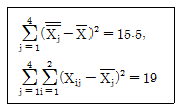
- 10.333
- 2.175
- 4.750
- 1.0875
(정답률: 알수없음)
91. 어떤 국가시험 성적분포는 평균이 70, 표준편차 10인 정규분포에 따른다고 한다. 최고 점수부터 시작하여 5%까지 1등급으로 분류한다면, 1등급이 되기 위하여 최소한 몇 점을 받아야 하는가?
- 86.45
- 89.60
- 90.60
- 95.00
(정답률: 50%)
92. A대학 학생들의 주당 TV 보는 시간을 알아보고자 임의로 9명을 추출하여 조사해 본 결과 다음과 같다. TV 보는 시간은 모평균이 μ인 정규분포에 따른다고 가정하자. μ에 대한 가장 정합한 추정치는? (문제 복원 오류로 그림이 없습니다. 정확한 그림 내용을 아시는분 께서는 오류신고 또는 게시판에 작성 부탁드립니다.)
- 13
- 14
- 14.5
- 14.9
(정답률: 10%)
93. 어느 농구선수의 자유투 성공률은 80%라고 알려져 있다. 자유투를 10개 던지는 실험을 실시할 경우 자유투 성공의 횟수에 관심이 있다고 할 때, 이 확률변수의 기댓값과 표준편차는?
- 기댓값 : 0.8 표준편차 : 0.16
- 기댓값 : 8 표준편차 : 1.6
- 기댓값 : 0.8 표준편차 : (0.16)1/2
- 기댓값 : 8 표준편차 : (0.16)1/2
(정답률: 9%)
94. 모집단의 분산 σ2에 대해 추론할 경우이에 대한 설명으로 틀린것은?
- 표본분산 s2을 사용할 수 있다
- 모집단의 분포가 정규분포라는 가정이 중요하다
- 표본의 크기가 n이면 검정통계량
 을 분포x2와 비교 사용한다
을 분포x2와 비교 사용한다 - 자유도가 n-1인 x2분포를 사용한다
(정답률: 19%)
95. 모표준편차가 8이라고 알려져 있는 정규 모집단에서 크기 100인 표본을 임의 추출하여 관측한 결과, 표본 평균이 42.7 이었다. 신뢰도 95% 하에서 모평균의 신뢰구간과 가장 가까운 것은? (단, Z0.⑤=1.645, Z0.025=1.960 )
- (41.13, 4427)
- (42.54, 42.86)
- (42.57, 42.83)
- (41.38, 44.02)
(정답률: 40%)
96. 어떤 화학 반응에서 생성되는 반응량(Y)이 첨가제의 양(X)에 따라 어떻게 변화하는지를 실험하여 다음과 같은 자료를 얻었다. 변화의 관계를 직선으로 가정하고 최소제곱법에 의하여 회귀직선을 추정할 때 추정된 회귀직선의 절편과 기울기는?
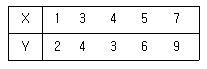
- 절편 0.2, 기울기 1.15
- 절편 1.15, 기울기 0.2
- 절편 0.4, 기울기 1.25
- 절편 1.25, 기울기 0.4
(정답률: 37%)
97. 세 집단의 평균이 서로 같은지 다른지를 검정하기 위하여 각 집단에서 크기가 6, 7, 11인 표본을 각각 추출하였다. 이 때, 작성되는 분산분석표의 평균오차제곱합(MSE)이 자유도는?
- 23
- 21
- 20
- 19
(정답률: 알수없음)
98. 갑작스런 홍수로 인하여 어느 지방이 많은 피해를 입어 제방을 건설하고자 할 경우 그 높이를 어떻게 결정하는 것이 타당한지를 통계적으로 추정할 때 필요한 통계량은?
- 평균
- 최빈값
- 중위수
- 최대값
(정답률: 알수없음)
99. 두 변수 X와 Y에 대해서 9개의 관찰값으로부터 계산된 통계량들이 다음과 같을 때 통계량의 값에서 추정한 단순회귀모형은?
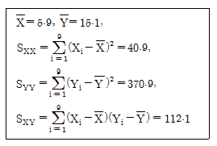
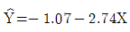
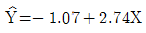
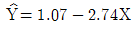
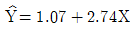
(정답률: 알수없음)
100. 어느대학의 학생 중 40%가 여성이고 그 중 10%는 아르바이트를 한다. 그 대학교에서 임의로 한 학생을 뽑았을 때 아르바이트를 하는 여성일 확률은?
- 0.01
- 0.04
- 0.25
- 0.4
(정답률: 8%)